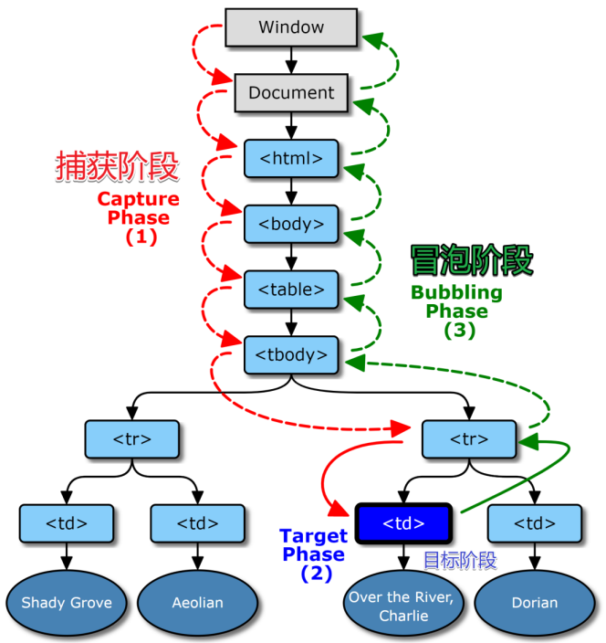
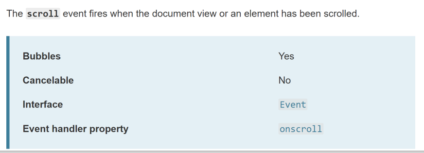

DOM事件模型与事件委托
DOM事件模型
捕获阶段：(从外向内调用监听函数)
- 当用户点击按钮，浏览器会从window开始，从上往下找监听函数，有监听函数就调用(并提供事件信息)，没有就跳过
冒泡阶段：(从内向外调用监听函数)
- 浏览器会从用户点击的按钮，从下往上找监听函数，有监听函数就调用(并提供事件信息)，没有就跳过

事件传播机制
- 事件传播机制：捕获阶段->目标阶段->冒泡阶段
绑定事件API
1 | div.addEventListener('click',fn,bool) |
- 如果bool不传或为falsy，就让fn走冒泡，即当浏览器在冒泡阶段发现div有监听函数，就会调用fn,并提供事件信息
- 如果bool为true,就让fn走捕获，即当浏览器在捕获阶段发现div有fn监听函数，就会调用fn,并提供事件信息
取消冒泡
- 捕获不可以取消，但冒泡可以取消，e.propagation()可中断冒泡
事件的特性
- Bubbles：表示是否冒泡，所有冒泡都可取消
- Cancelable：表示是否支持开发者阻止默认事件
- Cancelable与冒泡无关

target 和 currentTarget的区别
- e.target-用户操作的元素
- e.currentTarget程序员在监听的元素
1 | <div> |
- e.target就是span标签，div标签是currentTarget
事件委托
- 事件委托，也称事件托管或事件代理，就是把目标节点的事件绑定到祖先节点上。这种简单而优雅的事件注册方式是基于事件传播过程中，逐层冒泡总能被祖先节点捕获
为什么要用事件委托呢？
节省监听数，也就是节省内存
- 若监听100个按钮点击事件，咋办？– 监听祖先等冒泡的时候，判断target是不是这100个按钮中的一个
1 | div1.addEventListener('click',(e)=>{ |
可以动态监听元素
- 如何监听不存在的事件 – 监听祖先等点击的时候，看是不是想要的元素
1 | setTimeout(()=>{ |
封装事件委托
- 判断target是否匹配
1 | on('click','#div1','button',()=>{ |
- 【注意】上面这种封装是错的，在一些特定的情况下：
1
2
3
4
5
6<button>
<span>
click
</span>
</button>
//当button里加了span以后，上面的封装是错的 - 递归判断target,及祖先
1 | on('click','#div1','button',()=>{ |
All articles in this blog are licensed under CC BY-NC-SA 4.0 unless stating additionally.